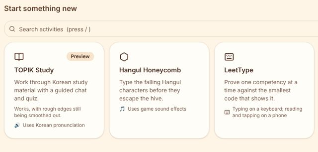
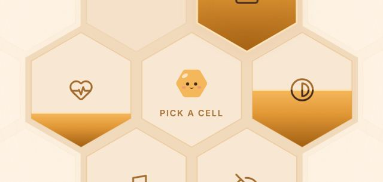

I build web services in Rust and web apps in TypeScript and React. These three are my own work, public, and in daily use. Two of them open in your browser with sample data.
file_host (Rust) HTTP + WebSocket: 40+ ops storage: SQLx / SQLite jobs: NATS JetStream cache: Redis overload: 429 · 413 · 503 ships as: Docker image
file_host: a backend service
Rust · Axum · Tokio · Redis · NATS
Sessions, push notifications and background jobs, with defined answers under overload and retried jobs.

Browser extensions
TypeScript · Firefox and Chromium MV3
Suspender Ledger, a tab suspender, passed Mozilla Add-ons review. Four more are at earlier stages.
Experience
Software engineer, independent
2024 to nowThe projects above, plus the CI that runs only what a change touches and a contract check that fails a server PR which would break the client.
Data Administrator, CABA Design
2020 to 2023Tableau dashboards on PostgreSQL; reporting automated through the Google Workspace API (10+ hours a week saved); Python fixes against Odoo's XML-RPC API.
Also
Inventory Specialist, WIS (2024 to now) · Clinical Data Operator, Natera (2019 to 2020)
Skills
Rust, TypeScript, React, Node.js, SQL, Python, Axum, Tokio, Redis, NATS, Docker, GitHub Actions, Vitest, Playwright
Education
B.S. Mechanical Engineering, UC Merced, 2015